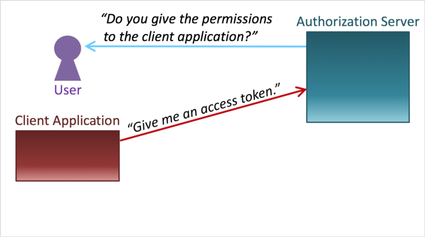
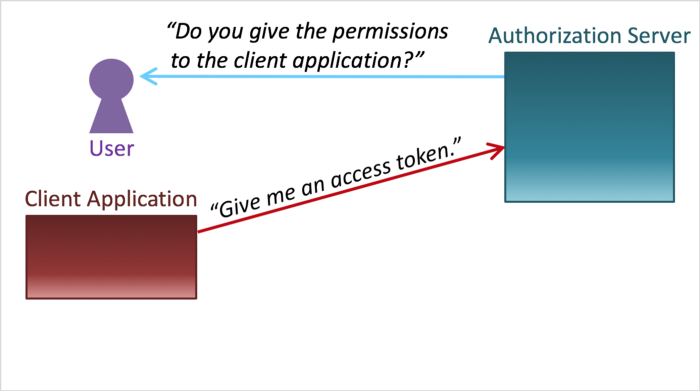

- Minimise attack surface area: restricties aanbrengen in (online)functies
- Establish secure defaults: de defaults zijn zo veilig als mogelijk
- The principle of least privilege: de lijst met rechten is zo klein als mogelijk maken (access)
- The principle of defence in depth: verschillende type security controles (lagen) aanbrengen
- Fail securely: zorg dat eventuele fouten niet tot onveilige situaties leiden (o.a. goede detectie / logging)
- Don’t trust services: ga er in principe van uit dat third-party (externe) services niet te vertrouwen zijn
- Separation of duties: breng een taakscheiding aan (fraude voorkomen)
- Avoid security by obscurity: geen zwakke plekken in de beveiliging ‘verstoppen’
- Keep security simple: complexe architecturen vergroten de kans op fouten
- Fix security issues correctly: security issues (root cause) moeten grondig worden gerepareerd en getest. 
- Het principe is dat een hacker een URL intypt in de adresbalk van de browser
- Of dat hij/zij een tool als Postman gebruikt
- De URL heb je zodanig aangepast dat je meer mag dan de bedoeling is
- http://mijnsite.nl/AB6G4JDLHGE7759HMDWSHGWLS/allesverwijderen
- http://mijnsite.nl/klant/edit?admin=true
- http://mijnsite.nl/miljoenennota/2017/document.pdf
- Echt gebeurd: de miljoenennota was op die manier al een paar dagen eerder beschikbaar dan officieel de bedoeling was. Het bestand stond er al maar er was nog geen link gepubliceerd. NOS
- Les: geheime URL's bestaan niet! Dwing eerst login af.
- Is onmogelijk in onze ORM (EF Core) zolang we niet expliciet SQL schrijven
-
Is mogelijk met
context.Database.ExecuteSqlCommand :.ExecuteSqlCommand("SELECT * From Stud Where Naam = " + naam) .ExecuteSqlCommand("SELECT * From Stud Where Naam = {0}", naam) .ExecuteSqlCommand("SELECT * From Stud Where Naam = @x", new SqlParameter("@x", naam))
-
Is mogelijk met stored procedures.
CREATE PROCEDURE [dbo].[GetStudents] @FirstName varchar(50) AS BEGIN SET NOCOUNT ON; select * from Students where FirstName like @FirstName +'%' END
Bron: sheets SIE
NB: de code hoeft niet opgeslagen te zijn in de database.
Nu een demo met ASP.NET Core: localhost:8080/Students/Zoek?Bob
Zie de demo voor uitleg.
- Veilig, tenzij je de standaard encoders niet gebruikt (die zetten
< om in< ), door bijv.HtmlHelper.Raw

Kan ook met POST requests:
- Bij het formulier wordt een server-side gegenereerde token meegestuurd
-
Deze antiforgery token wordt in het formulier teruggestuurd
<input name="__RequestVerificationToken" type="hidden" value="CfDJ8NrAkS ... s2-m9Yw"> -
Server-side wordt de token gecheckt met
[ValidateAntiForgeryToken] :[HttpPost] [ValidateAntiForgeryToken] public IActionResult Betaal(TransactieModel transactie) { // ... } - Wordt automatisch toegevoegd (kijk maar eens in de HTML)
- Wordt niet gebruikt bij API calls
Om te voorkomen dat een GET een onbedoeld effect heeft.
Man in the middle attack
- Certificaat nodig om te bewijzen dat jij de échte server bent.
- Voorbeeld: Russische aanval vanuit een auto buiten het OPCW gebouw in Scheveningen
Stiekem meeluisteren
(bron: guru99)
- Zonder Wifi-beveiliging kan iedereen alle HTTP requests zien
- Hypertext Transfer Protocol Secure
- Een heleboel is HTTPS
-
In de HTTPS handshake wordt (ongeveer)
-
de encryptie ingesteld: sleutels gedeeld, ...
- Alles is daarna geencrypt: de URL, de HTTP headers en de POST data
-
een certificaat van de server naar de client gestuurd
- self-signed of van een CA
- de client weet nu zeker dat het met de server praat die eigenaar is van het domein
-
de encryptie ingesteld: sleutels gedeeld, ...
- de server deelt de public key en certificaat
- de client stuurt de session key, geencrypt met de public key van de server
- er wordt een encryptie methode bepaalt
- HTTP Strict Transport Security
-
Automatisch switchen naar HTTPS
- door HTTP af te wijzen, of
- door te redirecten
- Voorkomt man in de middle
- Herinner: HTTP is zelf stateless
-
Na inloggen wordt er vaak 'sessie' gestart: met
- sessie-id's als query-parameter
-
cookies
- worden in de HTTP Response meegegeven als
Set-Cookie (of in JS aangemaakt) - worden bij alle HTTP requests daarna meegestuurd
- verlopen na een bepaalde tijd
- met
HttpOnly onbereikbaar voor JS (tegen XSS) - met
SameSite=Strict worden de cookies van B.com niet meegestuurd als A.com een request doet naar B.com (tegen CSRF)
- worden in de HTTP Response meegegeven als
-
Voorbeeld aanval (session fixation):
- Eve verleidt Alice om kwetsbaar.com/?session_id=123 te openen
- Alice logt in
- Eve heeft toegang tot Alice' account via kwetsbaar.com/?session_id=123
- Voorbeeld oplossing: na elke request/inlogpoging wordt de session_id ververst.
- Voorbeeld aanval (session side jacking): de cookie wordt gestolen op een open Wifi, en een website zonder HTTPS.
Kunnen wij niets aan doen tijdens de ontwikkeling van een webapplicatie
(Eventueel kunnen verdachte logins worden geblokeerd)
Goede uitleg van Cloudflare hier.

Wat is het doel?
- Site plat leggen
- Afleiding voor een hack
Wat te doen? Bijvoorbeeld:
- Abnormale request(frequentie)
- DDOS challange: bijv. HTTP challenge
- (bijv. redirect met cookies)
- IP reputation
DDOS aanval kan op elke laag in de netwerk communicatie (OSI model), maar is meestal op laag 4 of 7
- 2: Data link laag (ethernet frame, ...)
- 3: Netwerk laag (IP packet, ...)
- 4: Transport laag (TCP, UDP, ...): bijvoorbeeld SYN floods
- 7: Applicatie laag (HTTP)
Voor laag 1 tot 6 is er in de ASP.NET controllers is er niets aan DDOS te doen.
De instellingen van de server (IIS) kunnen wel helpen (vooral voor laag 7).
Packages kunnen helpen: zoals deze.
- OWASP principe Defence in depth: beveiliging op database-niveau.
-
Verschillende database gebruikers:
- Administrators
- Data analysten
- Politie
- Reclame bureaus
-
Hoe?
- Database gebruikers/rollen
- Encryptie van de database (database level, collumn level, ...)
- Views
- Pseudonimisatie
- Encryptie van de database: ingewikkeld en ORM-afhankelijk
-
Gegeven een
MijnContext met eenStudent :[Keyless] public class AnoniemeStudent { public int Id { get; set; } public double Cijfer { get; set; } } -
View aanmaken in de database:
public partial class editUserDTO : DbMigration { public override void Up() { MijnContext ctx = new MijnContext(); ctx.Database.ExecuteSqlCommand( @"CREATE VIEW dbo.AnoniemeStudent AS SELECT ID, Cijfer FROM dbo.Student" ); } public override void Down() { MijnContext ctx = new MijnContext(); ctx.Database.ExecuteSqlCommand("DROP VIEW dbo.AnoniemeStudent"); } } -
Het bijbehorende model:
[Keyless] public class AnoniemeStudent { public int Id { get; set; } public double Cijfer { get; set; } }
- Migraties zelf aanmaken is toegestaan!
- Add-Migration MigrationName -IgnoreChanges
- In views is het zelfs mogelijk on bepaalde omstandigheden een insert te doen
-
Geen zinvolle errors:
- Geen
app.UseDeveloperExceptionPage(); - Geen
app.UseDatabaseErrorPage();
- Geen
-
Log zo veel mogelijk
- Set de log-levels in
appsettings.json - Gebruik de
ILogger<StudentController> logger dependancy injection
- Set de log-levels in
- Stel: je wilt je e-mail (bijvoorbeeld gmail) lezen in je browser
- Of: je wilt je hotelboeking wijzigen of annuleren
- Dit zijn acties die jij graag wilt uitvoeren maar het is niet de bedoeling dat anderen dat ook kunnen (zien)
- Daarvoor gebruiken we een heel bekende oplossing: inloggen met een wachtwoord
- ASP.NET Core 3.1 kent die mogelijkheid natuurlijk ook, maar je moet wel even het juiste vinkje zetten
- Identificatie: vaststellen wie een persoon is.
-
Authenticatie: Aantonen dat de vastgestelde identiteit correct is.
- Wie ben jij?
- Authenticatie kan door een derde partij (OAuth): geen extra wachtwoord!
- Toegangscontrole (access control): Beperking van wie op welke manier wat kan doen
-
Autorisatie: Het proces dat vaststelt wat een gebruiker wel en niet kan en mag met de applicatie (rollen/rechten/privileges)
- Wat mag jij?
- There are data of a user.
- There is a server which manages the user's data. The server is called "Resource Server".
- There is a "Client Application" which wants to use the user's data.
- Let's prepare a gate to pass the user's data through. The gate is called "API".
- The client application requests the user's data.
- The resource server returns the user's data.
- What if there is a malicious client application?
- Even if the client application that requests the user's data is a malicious one, ...
- ... the resource server returns the user's data.
- Even a malicious application can get the user's data.
- We need a mechanism to protect the user's data.
- In the best practice, an "Access Token" is given to the client application in advance. An access token represents that the said client application has been given permissions to access the user's data.
- The client application presents the access token when it requests the user's data.
- The resource server extracts the access token that is included in the request, ...
- ... and confirms that the access token denotes that the client application has permissions to access the user's data.
- After the confirmation, the resource server returns the user's data.
- To make this mechanism work, an access token must be given to the client application in advance.
- Consequently, we need someone who issues access tokens.
- Someone who issues access tokens ...
- ... is called "Authorization Server".
- The relationship between a client application and an authorization server is as follows.
- An authorization server generates an access token ...
- ... and issues the access token to a client application.
- Let's review what we've learned so far. Characters are an "Authorization Server", a "Client Application" and a "Resource Server".
- The authorization server generates an access token ...
- ... and issues the access token to the client application.
- The client application requests the user's data with the access token.
- The resource server extracts the access token from the request, ...
- ... confirms that the access token has permissions to access the user's data ...
- ... and returns the user's data to the client application.
- In the flow above, the first step is access token generation by an authorization server. However, in a real flow, the user is asked before an access token is issued.
- First, the client application requests an access token.
- Then, the authorization server asks the user whether to grant the requested permissions to the client application.
- If the user allows the authorization server to issue an access token to the client application, ...
- ... the authorization server generates an access token ...
- ... and issues the access token to the client application.
- By the way, pay attention to the part encircled by the yellow ellipse.
- The part represents an access token request and a response to the request.
- And, it is "OAuth 2.0" that has standardized the part. Details of OAuth 2.0 are described in the technical document, RFC 6749 (The OAuth 2.0 Authorization Framework).
 

- De client logt dus niet in met Google gegevens in de webapplicatie, maar op Google zelf.
- De applicatie vertrouwt de “notaris” (in dit geval de Google Identity Provider)
- Een Identity provider is een Authorization server
- Tokens zijn vaak een beperkte tijd houdbaar
- Identity delegation
- Google/Facebook/LinkedIn/Twitter/...
-
ASP.NET Core Identity is een kant-en-klare manier om inloggen/registreren te regelen:
- Frontend in Razor Pages, en
- Backend in EF Core
-
In
: demo. In
:
dotnet tool install -g dotnet-aspnet-codegenerator dotnet add package Microsoft.VisualStudio.Web.CodeGeneration.Design dotnet add package Microsoft.EntityFrameworkCore.Design dotnet add package Microsoft.AspNetCore.Identity.EntityFrameworkCore dotnet add package Microsoft.AspNetCore.Identity.UI dotnet add package Microsoft.EntityFrameworkCore.SqlServer dotnet add package Microsoft.EntityFrameworkCore.Tools dotnet aspnet-codegenerator identity -dc MijnWebsite.Data.MijnContext --files "Account.Register;Account.Login;..." -
- Voer de migratie uit en update de database
- Voeg
services.AddRazorPages(); toe aanStartup.ConfigureServices - Voeg
app.UseAuthentication(); toe aanStartup.Configure - Voeg
endpoints.MapRazorPages(); toe bij de endpoints gedefinieerd inStartup.Configure
- Zelf maken is erg ingewikkeld!
-
Aanpassen is niet moeilijk:
- Overerf van
IdentityUser - Pas de front-end aan in de Razor Pages
- Overerf van
- Razor Pages: minder flexibiliteit, maar georganiseerdere code
- Razor Pages: Lijkt erg op MVC
- MVC en Razor Pages kunnen beide naast elkaar bestaan
Volg de guides op MSDN:
- Niet ingelogd/ingelogd: [Authorize] en [AllowAnonymous]
-
Geavanceerder: rollen
-
Gebruik 'dependency injection' voor
UserManager<InlogbaarUser> enRoleManager<IdentityRole> . -
In IdentityHostingStartup.cs (dus niet Startup.cs!):
services.AddIdentity<InlogbaarUser, IdentityRole> (options => options.SignIn.RequireConfirmedAccount = true) .AddEntityFrameworkStores<InlogbaarContext>() .AddRoles<IdentityRole>() .AddRoleManager<RoleManager<IdentityRole>>(); -
Voorbeeld-gebruik:
[Authorize(Roles = "GroteBaas,AfdelingFinancien")] public class SalarisController : Controller { } enawait roleManager.CreateAsync(new IdentityRole { Name = "GroteBaas" }); await userManager.AddToRoleAsync(user, "GroteBaas");
-
Gebruik 'dependency injection' voor
- Georganiseerder: policies.
- Nog geavanceerder: custom authorize attributen.
Zie hier. Wat weten we nu?
- Injection. Injection flaws, such as SQL, NoSQL, OS, and LDAP injection, occur when untrusted data is sent to an interpreter as part of a command or query. The attacker’s hostile data can trick the interpreter into executing unintended commands or accessing data without proper authorization.
- Broken Authentication. Application functions related to authentication and session management are often implemented incorrectly, allowing attackers to compromise passwords, keys, or session tokens, or to exploit other implementation flaws to assume other users’ identities temporarily or permanently.
- Sensitive Data Exposure. Many web applications and APIs do not properly protect sensitive data, such as financial, healthcare, and PII. Attackers may steal or modify such weakly protected data to conduct credit card fraud, identity theft, or other crimes. Sensitive data may be compromised without extra protection, such as encryption at rest or in transit, and requires special precautions when exchanged with the browser.
- XML External Entities (XXE). Many older or poorly configured XML processors evaluate external entity references within XML documents. External entities can be used to disclose internal files using the file URI handler, internal file shares, internal port scanning, remote code execution, and denial of service attacks.
- Broken Access Control. Restrictions on what authenticated users are allowed to do are often not properly enforced. Attackers can exploit these flaws to access unauthorized functionality and/or data, such as access other users’ accounts, view sensitive files, modify other users’ data, change access rights, etc.
- Security Misconfiguration. Security misconfiguration is the most commonly seen issue. This is commonly a result of insecure default configurations, incomplete or ad hoc configurations, open cloud storage, misconfigured HTTP headers, and verbose error messages containing sensitive information. Not only must all operating systems, frameworks, libraries, and applications be securely configured, but they must be patched/upgraded in a timely fashion.
- Cross-Site Scripting XSS. XSS flaws occur whenever an application includes untrusted data in a new web page without proper validation or escaping, or updates an existing web page with user-supplied data using a browser API that can create HTML or JavaScript. XSS allows attackers to execute scripts in the victim’s browser which can hijack user sessions, deface web sites, or redirect the user to malicious sites.
- Insecure Deserialization. Insecure deserialization often leads to remote code execution. Even if deserialization flaws do not result in remote code execution, they can be used to perform attacks, including replay attacks, injection attacks, and privilege escalation attacks.
- Using Components with Known Vulnerabilities. Components, such as libraries, frameworks, and other software modules, run with the same privileges as the application. If a vulnerable component is exploited, such an attack can facilitate serious data loss or server takeover. Applications and APIs using components with known vulnerabilities may undermine application defenses and enable various attacks and impacts.
- Insufficient Logging & Monitoring. Insufficient logging and monitoring, coupled with missing or ineffective integration with incident response, allows attackers to further attack systems, maintain persistence, pivot to more systems, and tamper, extract, or destroy data. Most breach studies show time to detect a breach is over 200 days, typically detected by external parties rather than internal processes or monitoring.
- Maak een model ToetsResultaat aan met tenminste een StudentNaam en Cijfer. Scaffold de Views en Controllers. Maak op de home-pagina links naar de actions van de ToetsResultaat controller.
- Zorg dat mensen zich kunnen registreren als Docent of Student. Maak een knop op de home-pagina waarmee de gebruiker kan wisselen in rol.
- Alleen docenten kunnen ToetsResultaten toevoegen en aanpassen. Studenten hebben die optie niet.
- Maak een zoek-functie waarmee studenten en docenten kunnen zoeken op studenten en hun resultaten. Maak deze pagina expres kwetsbaar voor SQL-injectie en voor kwetsbaar voor XSS.